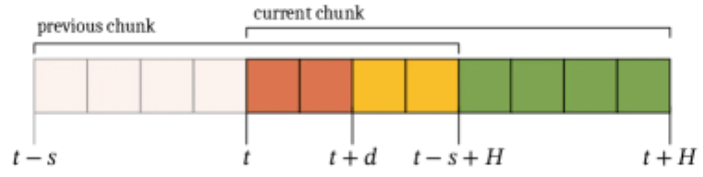
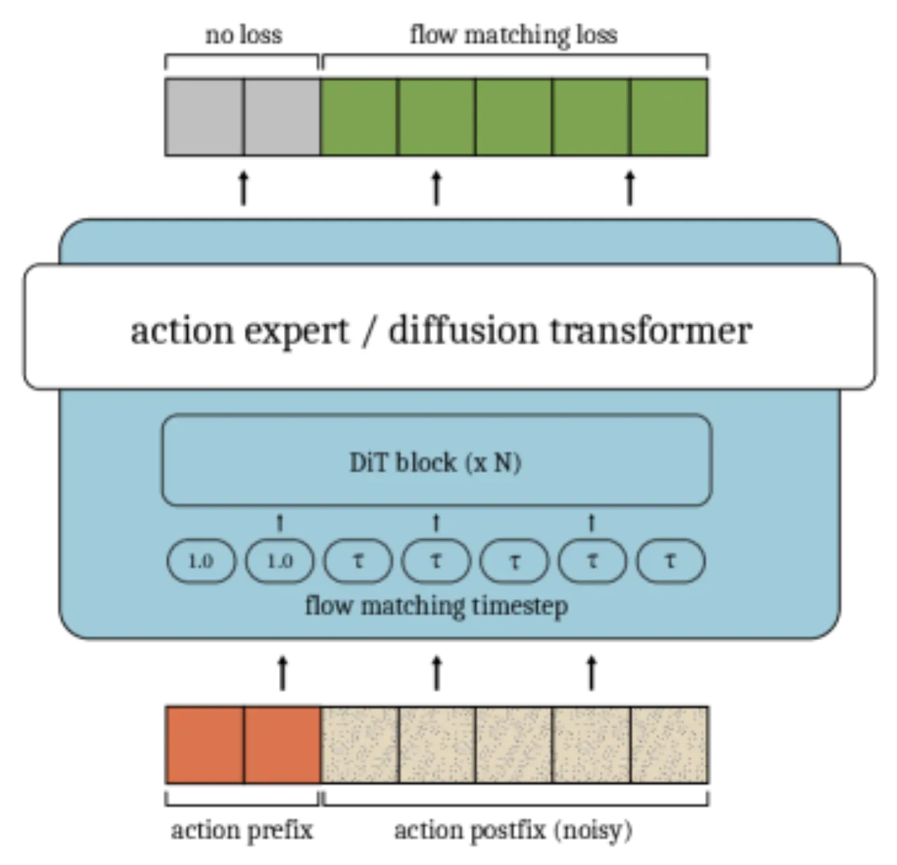
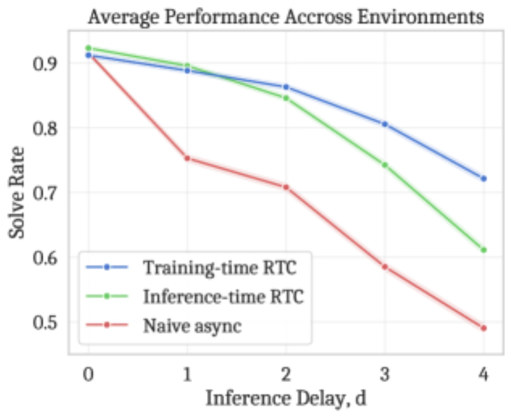
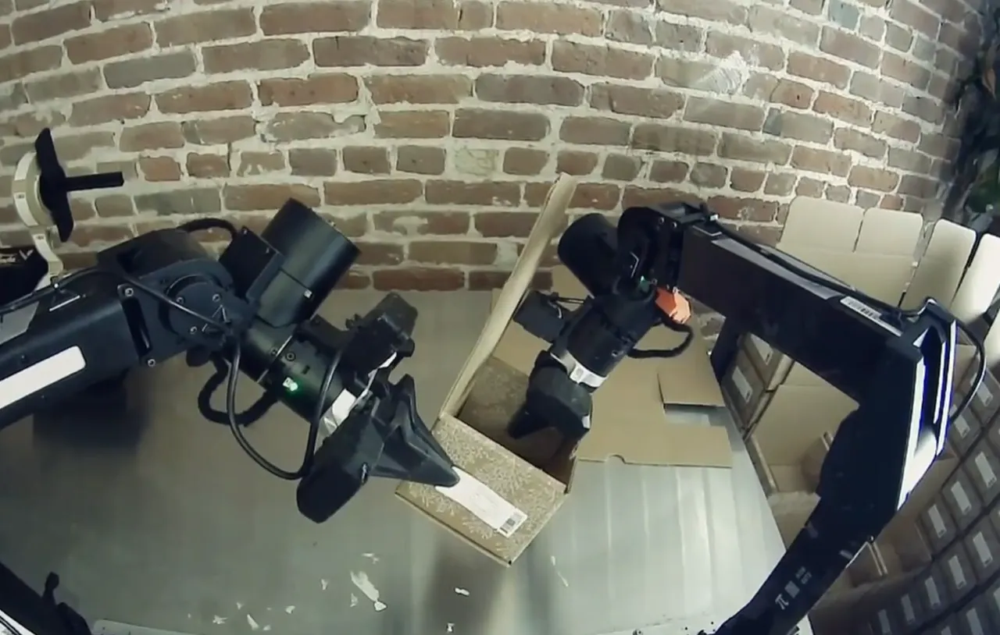
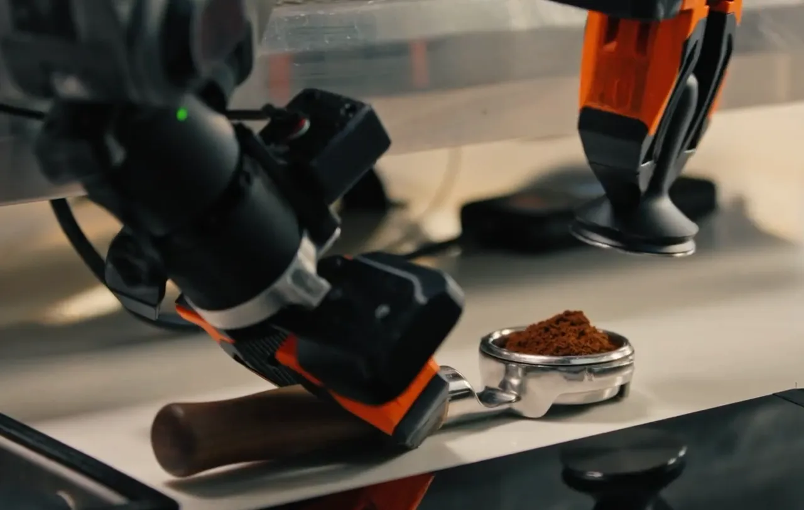
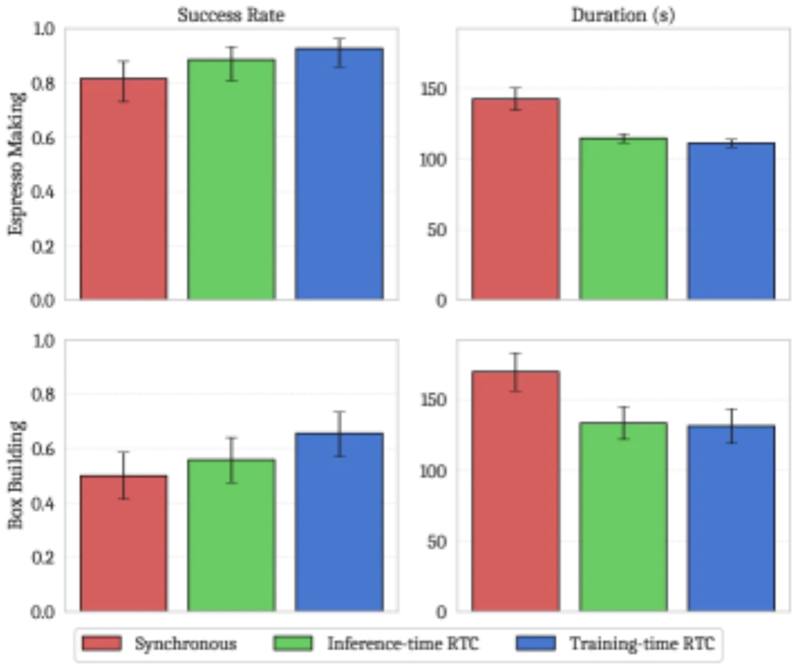

Real-Time Chunking（RTC）通过在推理时对 action chunk 做 inpainting 来实现异步、连续的机器人控制，但 inpainting 带来了额外的推理延迟。本文提出 training-time RTC：在训练中随机模拟推理延迟 d，并将模型条件化在已确定的 action prefix 上生成后缀动作，彻底消除推理时的 inpainting 计算开销。该方法无需修改模型架构或机器人运行时，仅需几行代码即可实现。
大规模 VLA（Vision-Language-Action）模型的推理延迟可达数十至数百毫秒，而机器人需要在实时约束下连续执行动作。 RTC（Real-Time Chunking）通过异步预测 action chunk 并在推理时用 inpainting 保证连续性来缓解这一问题， 但其 inpainting 本身引入了额外的计算开销，反而加剧了延迟。
"Unlike chatbots or search engines, embodied agents must operate in real time. The feedback loop between an agent's actions and its environment necessitates reactivity — like a human athlete, an agent cannot simply 'stop and think' while the outside world changes."

Training-time RTC 的核心思想：在训练时随机采样延迟 d，将 ground-truth 的 prefix 动作作为已知条件（flow matching timestep τ=1.0，无噪声），只对 postfix 动作做去噪学习（p(At+d:H | ot, At:t+d)）。训练时就学会了在任意延迟下根据已执行动作预测后续动作，部署时只需一次标准 forward pass，无需任何 inpainting 计算。

实验分两部分：仿真环境使用 dynamic Kinetix benchmark；真实环境使用 π₀.₆ VLA，在 box building（组装纸箱）和 espresso making（咖啡制作）两个精细操作任务上评估。对比基线为同步推理（synchronous）和 inference-time RTC。
4 层 MLP-Mixer 架构，预测长度 H=8，测试延迟 0–4，每个数据点对应 2048 次 rollout，误差区间为 95% Wilson score interval。 结果显示：training-time RTC 在推理延迟 ≥ 2 时表现优于 inference-time RTC，且差距随延迟增大而显著扩大；延迟为 0–1 时因训练监督减少而略低于 inference-time RTC。

使用 π₀.₆ base model，在远程 H100 服务器上以 5 个去噪步完成推理。Training-time RTC 平均端到端延迟 108ms（d≈5），inference-time RTC 平均延迟 135ms（d≈7）。



| 方法 | Box Building 成功率 | Espresso Making 成功率 | 推理延迟 | 额外推理开销 |
|---|---|---|---|---|
| Synchronous Baseline | 见 Figure 5 | 见 Figure 5 | — | 无 |
| Inference-time RTC | 见 Figure 5 | 见 Figure 5 | 135ms（d≈7） | 有（inpainting） |
| Training-time RTC（本文） | 见 Figure 5（与 RTC 相当） | 见 Figure 5（与 RTC 相当） | 108ms（d≈5） | 无 |
如原文所述："training-time RTC is fundamentally less flexible than inference-time RTC; it only supports conditioning on a 'hard' action prefix corresponding to the inference delay, whereas inference-time RTC can 'softly' incorporate additional actions beyond the prefix." 即 training-time RTC 只能处理固定 d 步的 hard prefix，无法像 inference-time RTC 那样对 prefix 之外的重叠动作进行软性加权引导。
Training-time RTC 需要在训练时选择合适的延迟分布（本文为 Uniform[0, 10]），该分布必须与实际部署时的推理延迟匹配。若实际延迟超出训练分布范围，性能可能下降。
Inference-time RTC 可以利用来自前一个 chunk 的所有 H−s 个重叠动作（不只是前 d 个）进行 inpainting，而 training-time RTC 仅使用前 d 个 action 作为 hard prefix，丢弃了额外的重叠信息。